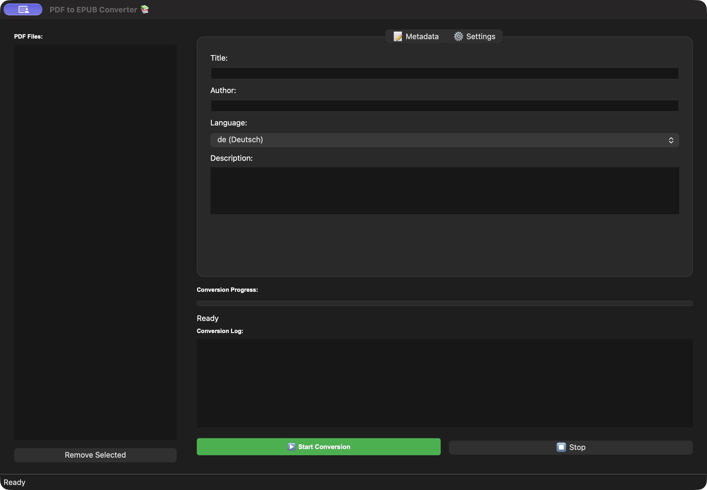

Text erkennen
Vorhandenen Text direkt übernehmen. Für textlose Seiten OCR automatisch aktivieren oder das ganze Dokument mit Tesseract lesen.
Lokal verarbeitet. Offen entwickelt.
Mach aus festen PDF-Seiten ein flexibles EPUB-E-Book. Mit Texterkennung für Scans und einer Desktop-Oberfläche, die dich Schritt für Schritt begleitet.
Python 3.11+ · Keine Registrierung · Keine PDF-Uploads
KLEINE WERKZEUGE. GUTER LESEFLUSS.
Die wichtigen Schritte an einem Ort – von der Dateiauswahl bis zum fertigen Buch.
Vorhandenen Text direkt übernehmen. Für textlose Seiten OCR automatisch aktivieren oder das ganze Dokument mit Tesseract lesen.
Titel, Autor, Sprache und Beschreibung pro Datei bearbeiten. Mehrere PDFs nacheinander verarbeiten und den Ausgabeordner selbst wählen.
Vorhandene EPUBs schützen, Zwischenbilder aufräumen und die Grundstruktur vor der Ausgabe prüfen. Bilder erhalten ein eigenes Illustrationskapitel.
EIN FENSTER. ALLE SCHRITTE.
Dateiliste, Metadaten und Fortschritt bleiben zusammen. Du siehst, welche Datei gerade verarbeitet wird, und kannst die Warteschlange abbrechen.
Der Screenshot zeigt einen früheren Oberflächenstand. Die aktuelle Version enthält die überarbeitete Warteschlange und Ordnerauswahl.

BEREIT FÜR DAS NÄCHSTE KAPITEL?
Du brauchst Python 3.11 oder neuer und Poetry. Für gescannte Seiten kommt Tesseract mit den passenden Sprachdaten dazu.
Vollständige Anleitung auf GitHub ↗git clone https://github.com/michkffm/PDF-zu-Epub-Konverter.git
cd PDF-zu-Epub-Konverter
poetry install
poetry run python src/main.pyFür deutsche OCR müssen die Tesseract-Sprachdaten deu installiert sein.
GUT ZU WISSEN
Diese Website stellt das Projekt vor. Die Konvertierung läuft ausschließlich in der lokal installierten Desktop-Anwendung. Hier gibt es keinen Datei-Upload und keinen Online-Konvertierungsdienst.
Die Anwendung wurde unter macOS mit Python 3.14 geprüft. Windows und Linux sind durch Python und PyQt grundsätzlich möglich, aber noch nicht praktisch abgenommen. Eine Smartphone-App ist nicht enthalten.
EPUB-Text passt sich dem Bildschirm an. Deshalb können Tabellen, Spalten, Formeln und Lesereihenfolge abweichen. Bilder werden in einem separaten Kapitel angezeigt. Bitte das Ergebnis im eigenen EPUB-Reader prüfen.
Pro Auftrag gelten unter anderem 100 MiB Eingabegröße, 500 Seiten und 16 Megapixel pro gerenderter Seite. Rendering und OCR haben Zeitlimits. Diese Schutzmaßnahmen ersetzen keine vollständige Betriebssystem-Sandbox.